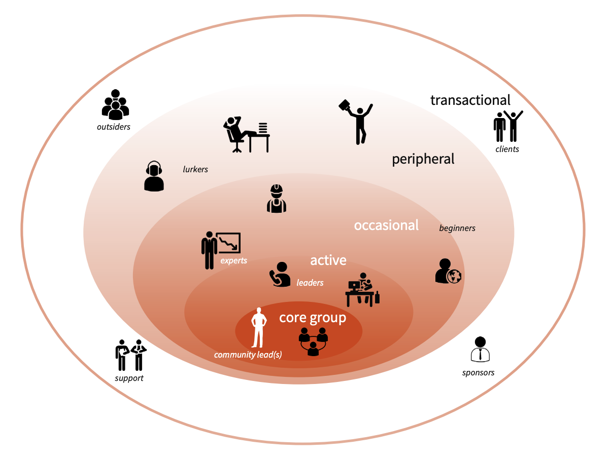

Openscapes Fall Newsletter 2026
Julie Lowndes ![]()
Stefanie Butland
Welcome to Openscapes’ newsletter! If you’re interested in seeing these infrequent updates in your inbox, please sign up here (linked from our connect with us page).
Cross-posted at openscapes.org/blog, nmfs-openscapes.github.io/blog, nasa-openscapes.github.io/news.
Hi All, Fall is here again, and we have had a busy year supporting science through close work with scientists and people supporting scientists. We have been working with new partners in the NASA suborbital community – people producing and using Earth observation data from aircraft, ships, towers, and field sampling sites. And with the European Space Agency – we are supporting the ESA EarthCODE Hackathon this month in Frascati, Italy!
After six years of working with us, both NASA Earthdata and NOAA Fisheries are formalizing their Openscapes Mentor communities. This is such a huge deal! It is shared joy for the Mentors as well as the whole open science movement – and helps give visibility and voice to open science and these leaders within the agencies. We are so thrilled to support these groups as they continue this work. We will continue to approach this with a Community of Practice (CoP) framing (Figure 1). The implementation will look different at these two agencies, represented in organizational charts and official committees. Our goal as the Openscapes Core Team is to support these efforts and to help cross-pollinate and bring expertise from the broader open data science community to both, reusing what works across groups. We will continue engaging (coordinating, shared infrastructure, cross-pollinating), empowering (teaching, developing, connecting to other groups, common approaches), and amplifying (storytelling, documenting, promoting). We will continue to partner with, convene, and learn with/from/for the open community for kinder science.

NASA Mentors met recently for a 6-hour annual working meeting “Unconf”, and have been finalizing vision documents and an activity plan for the next 12 months. In addition to supporting science teams with open science and Cloud, it will also include an explicit focus on open source community-maintained software. The earthaccess maintainers have submitted a publication for JOSS (Journal of Open Source Software), following formal software peer-review with pyOpenSci. They have also been openly developing earthaccess AI Policy – drafted by Danny Kaufman (ASDC). This began as guidance for AI contributions & automations and continues to be iterated openly with more reciprocity and context as earthaccess maintainers navigate increased contributions with agentic coding. They are continuing to work on the Cookbook and on a data access cheatsheet led by Alexis Hunzinger (GES DISC)!
NOAA Mentors have been supporting the transition to Cloud, in part through the Champions Cohort that is happening now with 110 staff across NOAA – the sixth year of NOAA Fisheries Champions Cohorts! NOAA Fisheries is establishing the Mentors as a formal group: the Fisheries Open Science Community of Practice (FOSCoP) within the Enterprise Data Governance Committee. This means they will have real voice within the organization, through organizational structure, formal reporting processes including a pipeline to leadership, and funding to be used for annual meetings to convene the group and for project work. They are approaching the structure as a CoP, where there is a core group with representatives across NOAA Fisheries offices, and that welcomes “allcomers” (see Figure 1). Plans are underway for a March 2027 Kickoff Unconf in person to connect, share ideas, and identify priorities.
We are learning more from examples of open governance – the process of who contributes to decisions about open source projects. NASA Mentors are exploring Astroquery’s contributor documentation as open software with joint-maintainership models with NASA, and there is also governance work by Python Enhancement Proposals (PEPs) and the Tidyverse tidyups (md link). Abby Cabunoc Mayes’ keynote at FOSDEM 2026 described the importance of mentorship in open source software in the age of AI.
Other things we’ve been up to:
- We co-led four sessions at the ESIP Summer Meeting in Austin (summary post), including a Monday Hackday!
- Andy Teucher presented at posit::conf (slides).
- NASA Openscapes supports suborbital science groups leveraging their expertise and programming - 2026 NASA Champions Recap.
- On-ramp to FAIR data in the EarthCODE Federation with European Space Agency researchers - 2026 ESA Champions Recap.
- How building coaching skills helps us listen and lead as mentors in technical environments - blog post.
- “Two things I’m proud of recently” and the paths to Openscapes: an interview with Stefanie Butland and Andy Teucher - blog post by new team member Ronny Hernández Mora.
- Community Call: Open Communities in the age of AI (event page with recording, notes, blog post to come)
- In the vein of “showing up at other people’s parties” and learning in solidarity with other open communities, Openscapes team members participated in two hackathons: Ronny Hernández Mora at Responsible Gen-AI for NASA Earthdata and Andy Teucher at OceanHackWeek.
- An exciting new publication: Shannon Rankin and NOAA Fisheries coauthors published the peer reviewed article, Community adoption of open data science for ecosystem sciences: A case study with passive acoustics (Rankin et al 2026). This is a follow-on to the tool-focused (Lowndes et al 2017), where Rankin et al share strategies for alleviating ‘soft’ barriers, and invite you to use the publication as an “innovation trigger” for your groups. They recommend a “coworking strategy that sets aside dedicated blocks of time to tackle discrete projects while fostering close-knit communities, whether starting with two collaborators or expanding to a broader network”, and Figure 1 shows the Open science adoption cycle and how to get to Eureka! sooner.
- The amazing Brianna Pagán Corremonte (Development Seed), gave a keynote at FOSS4G and then shared her thoughts in a blog post “AI is Accelerating our Social Debt”, and it is so important and inspiring, and speaks directly of our Openscapes community and GeoJupyter :star2:
Workflow tip: As a team, we’ve recognized we often identify and build infrastructure with “email-motivated development”: by drafting the email that warmly and succinctly communicates next steps for partners and participants, we identify what infrastructure we need to develop before we send the email!
Citation
@online{lowndes2026,
author = {Lowndes, Julie and Butland, Stefanie},
title = {Openscapes {Fall} {Newsletter} 2026},
date = {2026-11-13},
url = {https://openscapes.org/blog/2026-11-13_newsletter},
langid = {en}
}